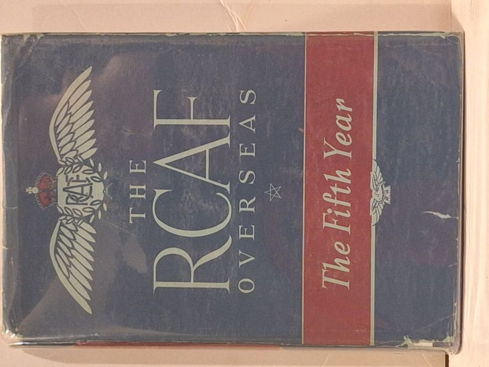

The R.C.A.F. Overseas: The Fifth Year
Royal Canadian Air Force (foreword by Hon. Colin Gibson, Minister of National Defence for Air) · Oxford University Press, Toronto, 1945

C$55.0 · Very Good condition
Oxford University Press, Toronto, October 1945. Stated 'First published, October 1945'. Volume 2 of the official three-volume RCAF history (The First Four Years 1944, The Fifth Year 1945, The Sixth Year 1949). Foreword by the Hon. Colin Gibson, P.C., M.C., M.P., Minister of National Defence for Air. Royalties accrued to the R.C.A.F. Benevolent Fund. Period-purchased copy: '$1.25 OCT 15/47' inscription on front pastedown. Printed in Canada.
Details
- Publisher: Oxford University Press, Toronto, 1945
- Binding: Hardcover
- Edition: First Edition
- Condition: Very Good
- Dust jacket: Good
- Category: Military